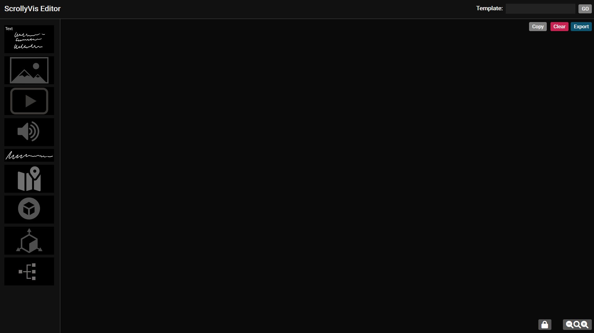
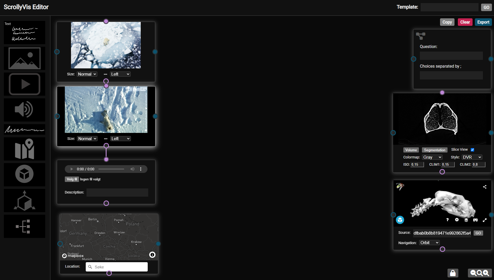
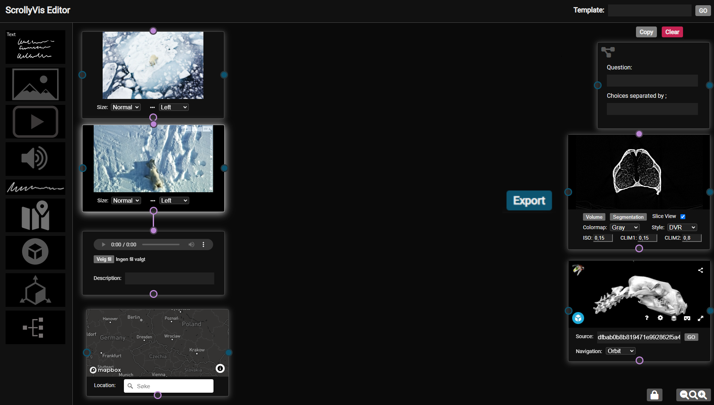
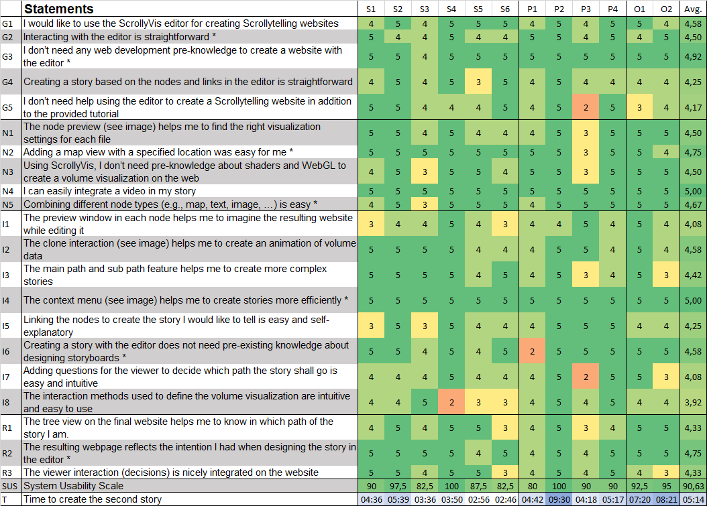
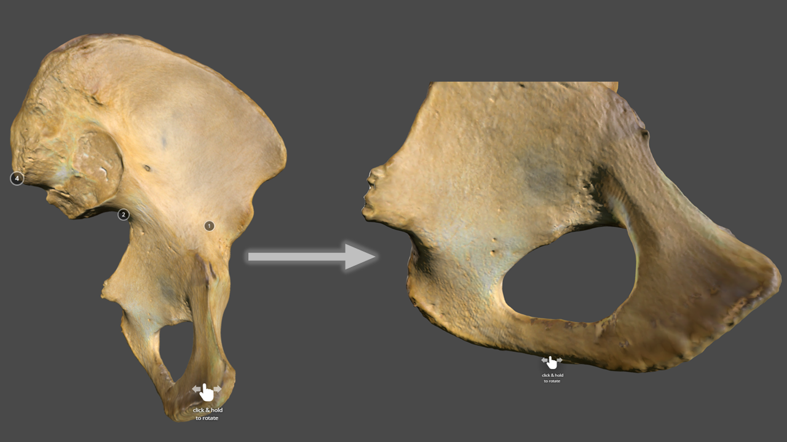
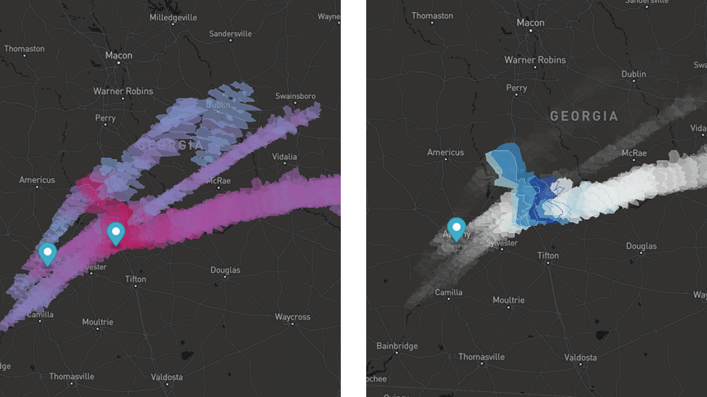

ScrollyVis: Interactive visual authoring of guided dynamic narratives for scientific scrollytelling
done
There are as many stories to tell as stars in the sky!

With ScrollyVis, we present a way to bring story ideas to life.

This enables authors to tell guided dynamic narratives in scrollytelling-form by simply using our editor.

Exported websites are ready for deployment on any webserver.

Our editor allows authors to create guided interactive narratives.
Such narratives are especially important to increase viewer engagement.
Now, we will show you an introduction video to the editor
To demonstrate the utility of our approach we condected a user evaluation with 12 participants
Here are the results:

Overall the editor got very good feedback!
Next, we will demonstrate four case studies created with our editor
Select which case study you would like to see

The Economist presented an archeological story in their special edition in December 2019 including surface visualizations of an important archeological site. The story is available here
To show the capabilities of our editor we created a replica of the story and we only needed one author and we created it in a matter of minutes.
We show you a video of the result:
The full story is available here: Unearthing the Truth Replica

In anatomy education bones are of great interest. The experts we invited have surface scans of human bones available on Sketchfab.
ScrollyVis enables them to create interactive stories about the bones and enables them to evaluate the effectiveness when comparing it to unrestricted exploration in Sketchfab alone.
We show you a video of the result:
The full story is available here: Anatomy education

In "A story about the weather" we use custom data provided by our expert to show the storm strength and hail amount.
Adding custom code to the resulting stories of ScrollyVis is easily done by adapting the Javascript code.
We show you a video of the result:
The full story is available here: A story about the weather
An important aspect of this story is including a volumetric scan of the bears skull.
A slice view of the bears nose reveals structures that warm up the ear before the bears breaths it in. This wouldn't be visible by only using a surface visualization of the skull.
We show you a video of the result:
The full story is available here: A Nose for the Winter